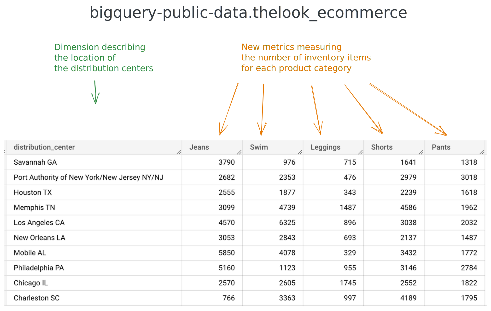

A SQL table is made of column and rows. We can also think about it as dimensions and metrics. Metrics are used to measure things and are number-based. For example, a number of items in inventory. Dimensions are used to describe things, so they are usually text-based, for example, the names of distribution centers, or the categories of products.
PIVOT
The goal of the pivoting operation is to take some dimension’s values use them as metrics, in new columns:

To achieve, this, you can use the PIVOT operator:
WITH distribution_centers_product_categories AS
( SELECT centers.name AS distribution_center,
inventory_items.product_category AS product_category
FROM bigquery-public-data.thelook_ecommerce.distribution_centers AS centers
INNER JOIN bigquery-public-data.thelook_ecommerce.inventory_items AS inventory_items
ON centers.id = inventory_items.product_distribution_center_id
),
inventory_items_by_category_and_center AS
( SELECT distribution_center,
product_category,
COUNT(*) AS inventory_items
FROM distribution_centers_product_categories
GROUP BY distribution_center, product_category
)
SELECT *
FROM inventory_items_by_category_and_center
PIVOT (
SUM(inventory_items)
FOR product_category
IN (
'Jeans',
'Swim',
'Leggings',
'Shorts',
'Pants'
)
)
ORDER BY RAND();
The PIVOT operator is part of the FROM clause. Similar to the JOINs, it comes after source table, on which it does the transformation. As you can see above, the PIVOT operator has 3 components:
- How the new metrics should be calculated (in the example above:
SUM(inventory_items)).
- The dimension in which the values should be taken to be used as metrics (in the example above:
FOR product_category).
- The specific values we want to use as metrics (in the example above:
IN ( 'Jeans', 'Swim', 'Leggings', 'Shorts', 'Pants' )).
Good to know:
The same results can be accomplished by using a combination of CASE WHEN and GROUP BY. This will be the topic of one of our practice problems for this lesson.
Learn more
👉 PIVOT operator
{% include practice_problems_intructions.html %}
N°1 — Number of Google Analytics event types by user using the built-in PIVOT operator
Tables
bigquery-public-data.ga4_obfuscated_sample_ecommerce.events_*
Task
Using the built-in PIVOT operator, write a query that will display, by user, in January 2021, the number of occurrences of each of the following event types (event_name):
- session_start
- page_view
- view_item_list
- select_item_list
- view_item
- add_to_cart
- begin_checkout
- purchase
Example results
Solution
🙈 Hide👀 Show
SELECT *
FROM (
SELECT user_pseudo_id, event_name
FROM `bigquery-public-data.ga4_obfuscated_sample_ecommerce.events_*`
WHERE _table_suffix BETWEEN '20210101' AND '20210131'
)
PIVOT (
COUNT(*)
FOR event_name
IN (
'session_start',
'page_view',
'view_item_list',
'select_item_list',
'view_item',
'add_to_cart',
'begin_checkout',
'purchase'
)
)
ORDER BY purchase DESC;
N°2 — Number of Google Analytics event types by user WITHOUT using the built-in operator
Tables
bigquery-public-data.ga4_obfuscated_sample_ecommerce.events_*
Task
WITHOUT using the built-in PIVOT operator, write a query that will display, by user, in January 2021, the number of occurrences of each of the following event types (event_name):
- session_start
- page_view
- view_item_list
- select_item_list
- view_item
- add_to_cart
- begin_checkout
- purchase
Example results

Solution
🙈 Hide👀 Show
WITH user_events AS
( SELECT user_pseudo_id, event_name
FROM `bigquery-public-data.ga4_obfuscated_sample_ecommerce.events_*`
WHERE _table_suffix BETWEEN '20210101' AND '20210131'
)
SELECT user_pseudo_id,
COUNT(CASE WHEN event_name = 'session_start' THEN 1 END) AS session_start,
COUNT(CASE WHEN event_name = 'page_view' THEN 1 END) AS page_view,
COUNT(CASE WHEN event_name = 'view_item_list' THEN 1 END) AS view_item_list,
COUNT(CASE WHEN event_name = 'select_item_list' THEN 1 END) AS select_item_list,
COUNT(CASE WHEN event_name = 'view_item' THEN 1 END) AS view_item,
COUNT(CASE WHEN event_name = 'add_to_cart' THEN 1 END) AS add_to_cart,
COUNT(CASE WHEN event_name = 'begin_checkout' THEN 1 END) AS begin_checkout,
COUNT(CASE WHEN event_name = 'purchase' THEN 1 END) AS purchase
FROM user_events
GROUP BY user_pseudo_id
ORDER BY purchase DESC;